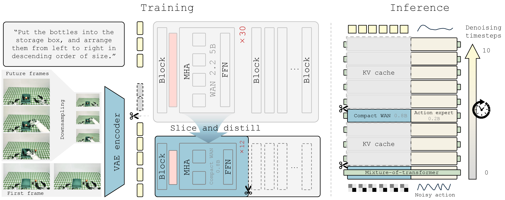
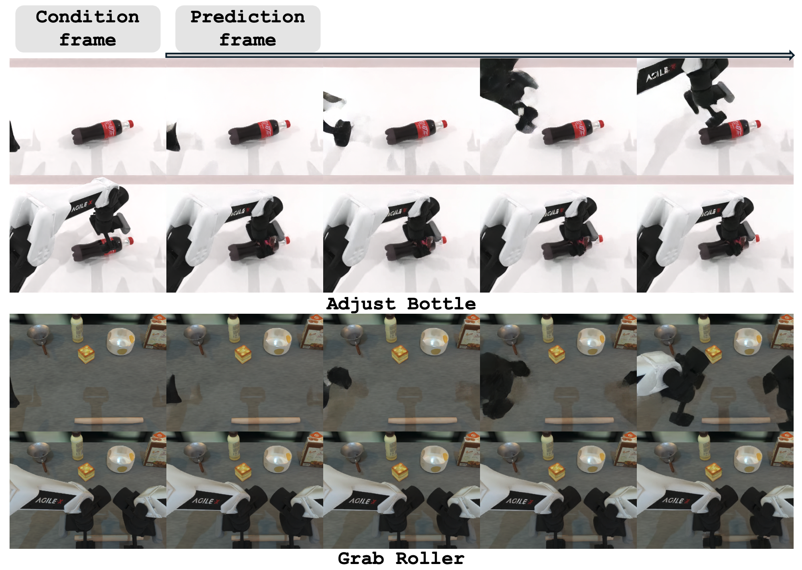
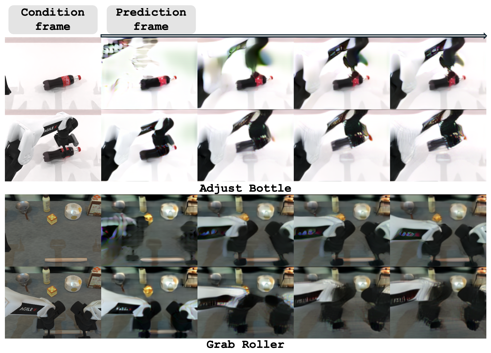

Compact video expert
A lightweight video expert is initialized from WAN-2.2-5B through structured layer slicing and teacher-guided distillation.
World-Action Models (WAMs) have emerged as a promising paradigm for embodied control by coupling future visual prediction with action generation. However, most existing WAMs rely on photorealistic future prediction, which incurs high inference latency and makes real-time robot deployment difficult. This motivates a more efficient WAM design that preserves the control benefits of future visual prediction while reducing its inference cost.
We introduce Efficient-WAM, a World-Action Model that reduces the cost of future imagination while preserving its control benefit. Efficient-WAM improves inference efficiency via a compact video expert transferred from WAN-2.2-5B, token-sparse video latents, and asymmetric video-action denoising that allocates fewer sampling steps to video than to actions. Instead of optimizing the future branch for visual fidelity, Efficient-WAM treats future video prediction as a compact guidance signal for action generation. Comprehensive experiments on RoboTwin 2.0 and real-world manipulation tasks show that Efficient-WAM maintains strong action performance despite visibly coarse future predictions. While maintaining competitive control capabilities, our 1B-parameter model can reduce per-chunk latency to around 100 ms during physical deployment, achieving a 30x speedup over existing WAMs.
Efficient-WAM compresses the video branch along three axes: model size, future-token density, and denoising budget.

A lightweight video expert is initialized from WAN-2.2-5B through structured layer slicing and teacher-guided distillation.
Future frames are predicted as low-resolution latents while current observations remain high-resolution for action conditioning.
The video branch receives fewer denoising updates than the action branch, reducing latency while preserving action-centric structure.
Efficient-WAM matches heavyweight baselines on RoboTwin 2.0, while Efficient-WAM-RT provides a practical accuracy-latency trade-off and achieves the best average success with the fastest execution on real-world Astribot S1 tasks.
Average success rates over 50 tasks under clean and randomized settings.
| Method | Clean (%) | Random (%) | Params |
|---|---|---|---|
| VLA-based methods | |||
| π0 | 65.9 | 58.4 | 3.3B |
| StarVLA-α | 76.8 | 79.1 | 2B |
| π0.5 | 82.7 | 76.8 | 3.3B |
| ABot-M0 | 86.1 | 85.1 | 4.2B |
| LingBot-VLA | 86.5 | 85.3 | 4B |
| WAM-based methods | |||
| UWM | 81.7 | 78.6 | 5B |
| GigaWorld-Policy | 86.4 | 85.0 | 5B |
| Motus | 88.7 | 87.0 | 8B |
| Efficient-WAM | 86.7 | 85.7 | 1B |
| Efficient-WAM-RT | 83.1 | 82.0 | |
Success rates over four physical manipulation tasks.
| Task | π0.5 | Motus | Efficient-WAM-RT |
|---|---|---|---|
| Pipette-tray grasping | 100 | 85 | 95 |
| Reagent-bottle transfer | 75 | 80 | 75 |
| LEGO color sorting | 30 | 65 | 65 |
| Pen uncapping | 10 | 25 | 30 |
| Avg. Success (%) | 53.75 | 63.75 | 66.25 |
| Avg. Chunk Lat. (ms) | 113 | 3215 | 98 |
| Avg. Step Lat. (ms) | 7.1 | 200.9 | 6.1 |
Efficient-WAM-RT produces blurrier and lower-fidelity futures than the uncompressed video expert, yet preserves action-centric structure, motion direction, and contact layout.


We deploy Efficient-WAM-RT on the Astribot S1 across four physical manipulation tasks, covering precise tray grasping, gentle reagent-bottle transfer, long-horizon color sorting, and fine-grained bimanual pen uncapping.
@article{li2026efficientwam,
title = {Efficient-WAM: A 1B-Parameter World-Action Model with Low-Cost Future Imagination},
author = {Li, Jiajun and Guo, Tiecheng and Ye, Yifan and Zhang, Rongyu and Chi, Xiaowei and Sun, Qianpu and Li, Ying and Lou, Yunfan and Huang, Yan and Lu, Zhihe and Guo, Meng and Zhang, Shanghang},
journal = {arXiv preprint},
year = {2026}
}